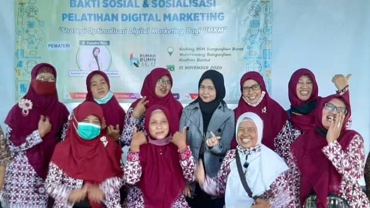

Gerakan Perempuan Berkemajuan
Pimpinan Ranting ’Aisyiyah (PRA) Bangunjiwo Barat
Menggerakkan peran perempuan dalam keluarga sakinah, pemberdayaan ekonomi perempuan, pembinaan TK ABA, dan kesehatan masyarakat.
Majelis Tabligh & Ketarjihan PRA
Pengajian rutin Ahad Pon ibu-ibu ’Aisyiyah, kajian fiqih wanita, serta tadarus Al-Qur’an terpadu di 26 masjid/mushola.
Majelis PAUD, Dasar & Menengah
Pengelolaan 5 PAUD/TK ’Aisyiyah Bustanul Athfal (Karangjati Indah I, Lemahdadi, Sambikerep, Melati Suci, Among Siwi).
Majelis Ekonomi & Ketenagakerjaan
Koperasi simpan pinjam syariah BMT pendampingan UMY dan pelatihan UMKM boga ibu-ibu jamaah ’Aisyiyah.
Dokumentasi Visual Asli
Klik foto untuk memperbesar
Galeri Foto & Dokumentasi (1 Foto)

Perbesar
Dokumentasi Audiovisual Resmi